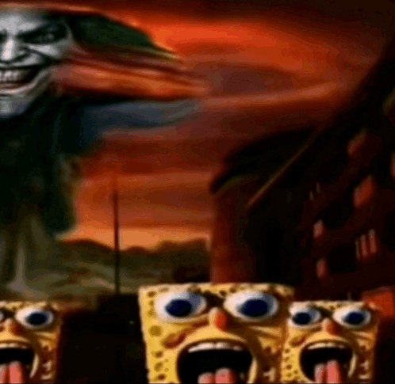

It’s 6:48AM EST, an ambulance jolts you awake. You look out the window, groggy, and the sirens have already faded. The sound reverberates off the old brick that still remembers the eighties. The now distant sound bounces off the new float glass of the “Royal Chicken & Burger”. The siren is gone—nothing has changed. Change however, is a spectrum, and is predominantly chronological. Before the new float glass was sealed onto the polished walls, it was originally called “Royal Fried Chicken”, a former hotspot of mine. Every weekend, my mom and I would go there for lunch. The place ceased to exist during an apartment fire. Right of the chicken shop was a store simply under the label “Ave. D Pizzeria". Within the dainty place, the first thing you’d see is the grease stained glass that’s been living for as long as I have, maybe even longer.
You go outside of your lead-sealed apartment, or some high-rise building, and feel the air chill your hands, as the roaring of cars that were purchased days or years ago honk at each other in the midst of a red light. The people in those cars wear black fancy suits with a red tie, someone else wears a plain white shirt and denim pants, that one wears a hoodie with some company logo engraved on the front. They don’t notice you—They never will. Maybe one glance and back to the steering wheel, but that’s all you’ll get from them. You’ll never see them again. The green light flickers back on. The cars go back into motion, and they cease to exist. You pass the crosswalk, having the wind steal some stashed napkins in the process. The sidewalk looks normal to you as always. You’ve never bothered realizing that. There’s some segments of the sidewalk that look out of the ordinary, this one is brighter than the others. Maybe it was repaired. You bump past someone who's rushing for something, maybe they’re too busy caring for themselves. Maybe they’re late for their job. You look left, there's a bunch of people grouped together playing some tabletop game. You don’t understand their language, but they’re likely having a good time. It’s noon now, and the air’s getting warmer. Still chilly, but more bearable. The streets are now twice as crowded. There are those who walk down the street alone, whose faces tell the story of their emotions. There are others who are grouped together. Friends, families, and yet, they all avoid different parties unless the time is convenient. It’s odd, yet incredible. Everyone minds their own business except when someone or something impedes theirs, or if it's done by choice to engage.
There was a time when I walked down Avenue D. It was around 3:00 AM, when I wasn't able to sleep on the weekend and snuck out of my flat. The streets were but crickets. Sometimes, a car would roll by and hit a road bump, making this thud I reminisce of. Nowadays, motorcycles fly down Avenue D partly at night, revving their obnoxiously loud engines like a jerk. Anyhow, there were a few odd and intimidating people who came up to me and asked “Are you lost?”, not out of cruel intent, but out of concern. I didn’t realize that at the time. I was a young, oblivious dreg who left people with no answers. Across the street from where I lived was a homeless man who made the sidewalk his home. I didn’t know him, and I never will, I only knew his name. The man's name was August. He was too trusting, and his ideas enthralled me. One could mistake us for two best friends, given for how long we talked. He rambled a lot about his struggles and stories, about how he got screwed by his insurance and bank, and when he took care of a cat named “Tin”. I don’t remember much of what he has said, since it was a long time ago, but I do remember at least one. It went something like this: “Everyone walks by me like they have something to do, it's like they’re machines. Machines.. You’re a machine, I'm a machine— we have everything to do in this world—and yet we, us, you and me, we’re stuck doing the same thing, over and over again.” A day after my encounter with the man, he vanished. His blue plastic tarp and makeshift bed ceased to exist alongside him. From time to time, I think of where he is, but that thought isn't as relevant anymore. My mind’s recycled him, and it sucks.
Manhattan—and New York as a whole—is a coagulate of years and decades that coexists like a disjointed opera group, then as the gutter smoke fills in what the sound has left, as the moon is moored into place, it ceases to exist. And yet, such malevolence of time won’t allow the streets to be silent. The light of video billboards in Times Square illuminates the grandeur of masses 24/7. The midnight breeze of Avenue D cloaks around cars that drive over the road bump. There is no coincidence to this. I am one of many who thinks that their contiguous and different lifestyles are on repeat, with constant subtle changes that we push aside and forget about after a day has passed; and at some point, the stars will have cycled a millennium—and so will we. Within that millennium, we forge our own stories from scratch every day, only to have them recycled the next, and recorded in our memories. We move on with our lives, indifferent and changing, and that "Green Light" Gatsby so wished to attain will be ours, born out of fear that we cease to exist. But such an idea wouldn’t be agreed with by some, that I understand. And so, I will give you this: The machines in everyone and everything make it the reason why it's called “The City That Never Sleeps”.
